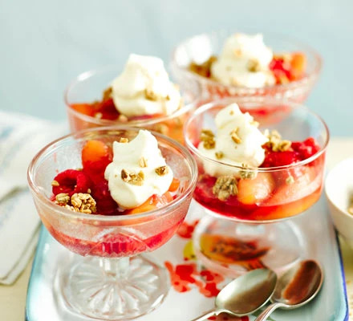

Peach Melba Crumbles Recipe

Ingredients
- 410g can sliced peaches in syrup
- 1 tbsp butter
- 150g raspberries
- 100ml whipping cream
- 100ml whipping cream
- ½ tbsp icing sugar
- 100g granola
Method
-
Pour the can of peaches, with the syrup, into a small saucepan over a
medium heat. Add the butter and simmer until the peaches are hot. Once
simmering, add the raspberries and cook for 1-2 mins more until hot.
-
Meanwhile, put the cream in a large bowl with the icing sugar and whisk
until lightly whipped.
-
Using a slotted spoon, put the peach Melba mixture into four serving
dishes and top each with a sprinkling of granola and a dollop of cream.